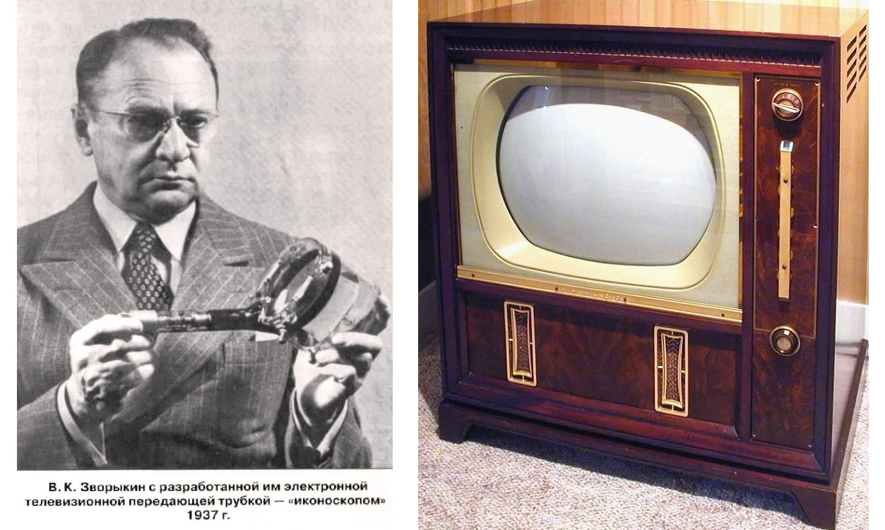

Эволюция телевизоров
Как выглядел старый механический телевизор и новый в сравнение


Интересный факт
В США телевизионная эра началась с курьёзного случая: во время одной из первых рекламных передач на экране появилось очень чёткое и правдоподобное изображение таракана.
Зрители, решив, что это настоящее насекомое, в панике стали разбивать свои телевизоры, чтобы уничтожить «ползающее чудовище».
В результате компания получила несколько судебных исков от возмущённых владельцев техники.
История телевизоров
Таблица: 3 лучших телевизора
| OLED-премиум: LG OLED42C4RLA | Для киноманов и геймеров, обеспечивает безупречный черный цвет, глубокую контрастность и поддержку продвинутых игровых функций |
| Smart-телевизор: Яндекс ТВ Станция Про (55") | Модель с безрамочным 4K-экраном и мощной встроенной Алисой, идеальный вариант для обустройства умного дома. |
| Соотношение цены и качества: TCL 55P7K | Доступный 4K-телевизор с хорошей цветопередачей, шустрой системой на Google TV и поддержкой голосового управления |
Выбирайте телевизор ориентируясь сайту, либо на ваш цвет и вкус!
Телевизор — это
устройство для приёма и воспроизведения телевизионных передач, преобразующее электрические или цифровые сигналы в изображение и звук на экране и через динамики.,
то есть преобразования электрических или цифровых сигналов в изображение и звук на экране и через динамики.
📺 Ваш новый мир начинается с экрана!